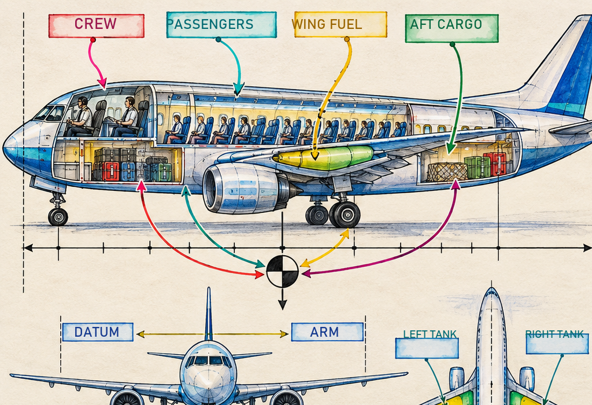
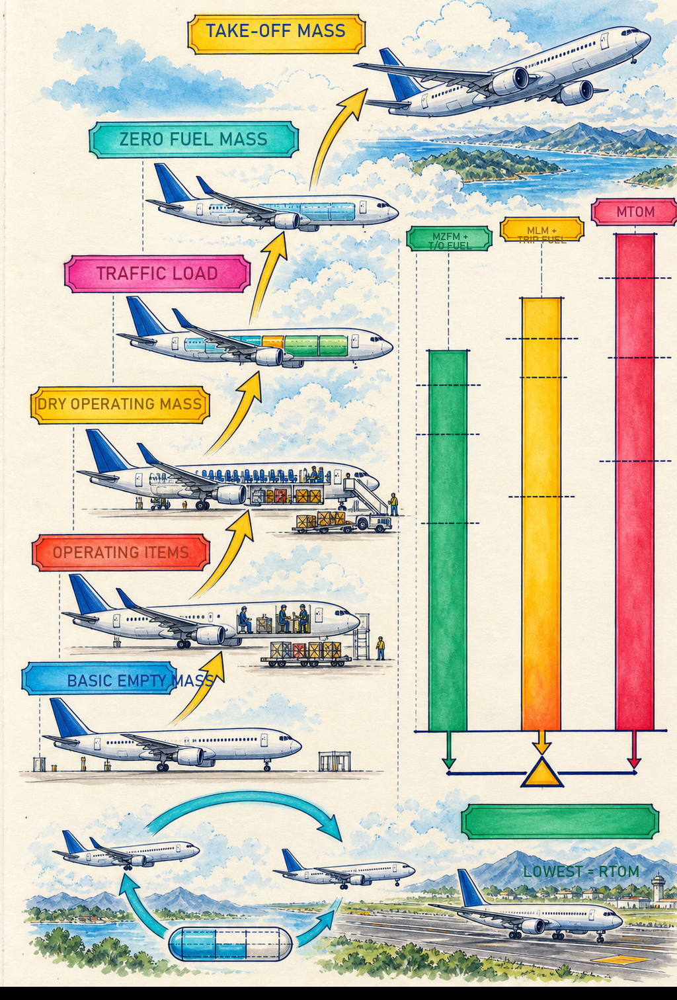
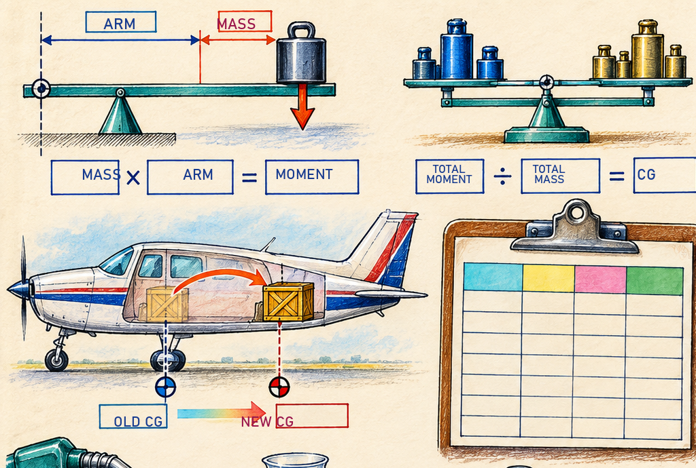
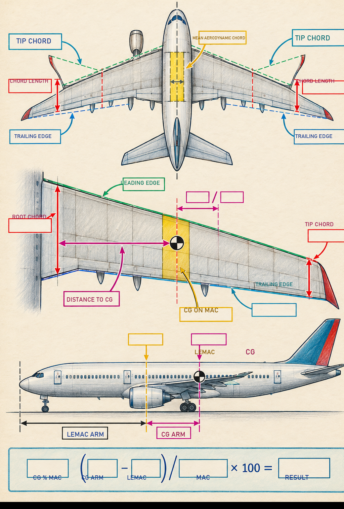
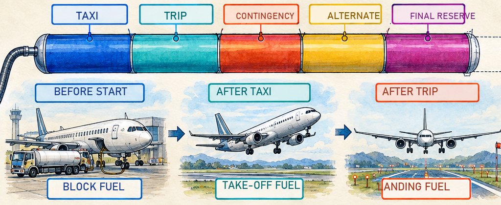
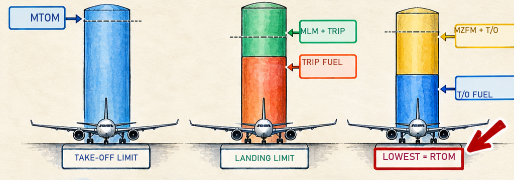
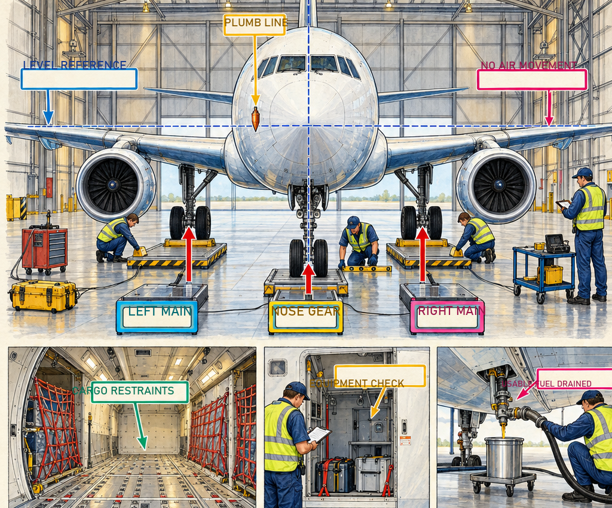
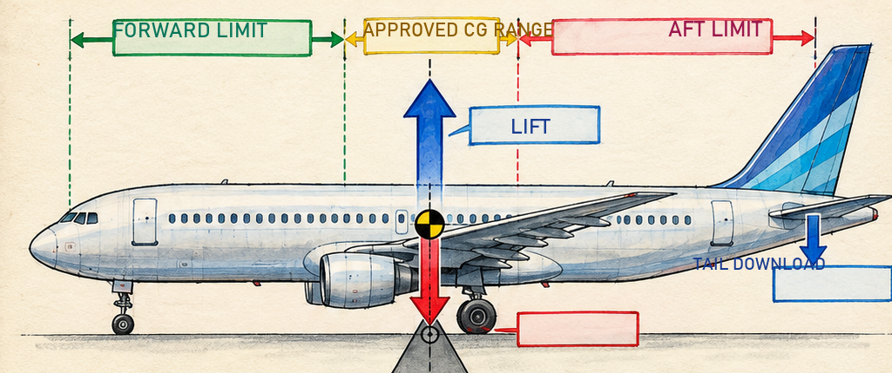
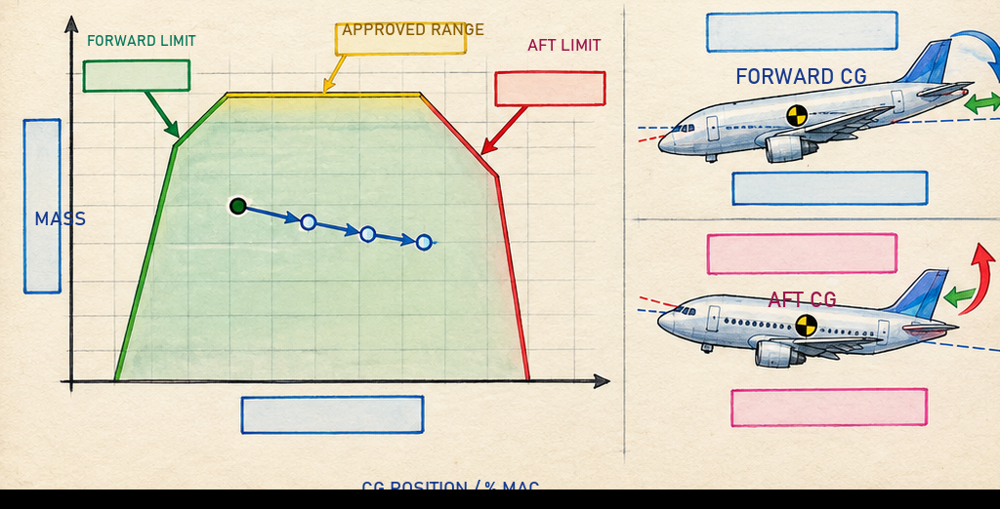
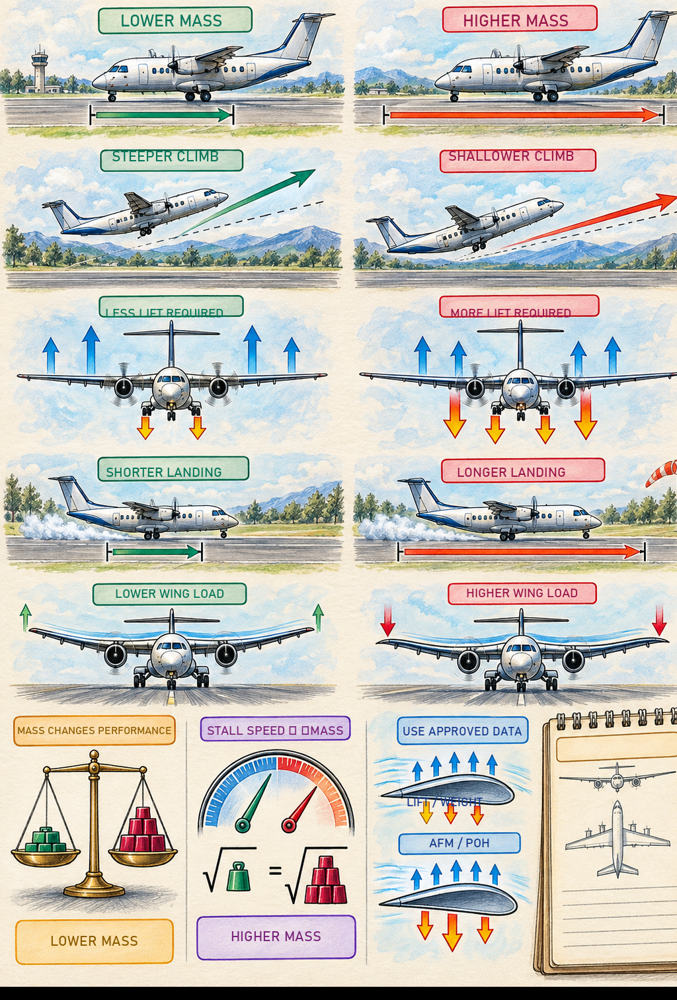

Flight Plan for This Chapter
Mass is the quantity of matter, stated in kg or lb. Weight is the force produced by gravity. Aviation questions often use the everyday word “weight”, but the calculation tables normally handle mass.
Centre of gravity (CG) is the point through which the resultant weight is considered to act. Datum is the fixed reference plane. Arm is the signed distance from datum. Moment is mass multiplied by arm.
ICAO-style terms used here: dry operating mass, traffic load, take-off mass, landing mass and zero fuel mass. Where general-aviation manuals use a different empty-mass definition, the definition is stated before the calculation.
Sections 1 to 16 — the theory, in the order you need it, with worked examples.
Part A — the one-page DGCA must-know sheet: every formula and every number.
Part B — eight mnemonics.
Part C — all 75 practice questions, each one worked line by line, with the distractors explained.
Part D — final revision.
Work the theory first and the questions second. Then come back to Part D the night before the paper.
1. Why This Chapter Decides Whether You Get Airborne
Every other subject you study tells you what the aeroplane can do. This one tells you what you are allowed to put in it before it does. Get it wrong and nothing warns you. The aeroplane does not refuse to start. There is no caption, no bell, no red light. You simply run out of runway sooner than the chart said you would, or you reach the flare and discover the elevator has nothing left to give.
Good airmanship requires that the loading, the mass and the centre of gravity of the aeroplane all comply with the limits in the approved Flight Manual. The Pilot-in-Command carries that responsibility personally. Somebody else may prepare the load and trim sheet; the commander signs for it, and the commander is the one in the seat when it is wrong.
1. HOW MUCH can I carry? That is MASS — total mass against structural and performance limits.
2. WHERE do I put it? That is BALANCE — the centre of gravity against its forward and aft limits.
An aeroplane can be under every mass limit and still be lethal because the load is in the wrong place. Both questions must be answered, every flight.

2. The Vocabulary of Position
Before any arithmetic, four words. Every balance calculation you will ever do is these four words arranged in a table.
Datum (reference datum). An imaginary vertical plane, chosen by the manufacturer, from which every horizontal distance is measured. It is fixed for the type and stated in the Flight Manual. There is no rule about where it sits — it may be at the nose, at the firewall, at the leading edge, or in empty space some distance ahead of the aeroplane. Manufacturers often place it ahead of the nose deliberately, so that every arm on the aeroplane comes out positive and nobody loses a minus sign.
Balance arm (arm). The horizontal, fore-and-aft distance from the datum to the centre of gravity of a mass. Aft of the datum is positive; forward of the datum is negative.
Moment. Mass × arm. A measure of the turning effect that mass has about the datum. Units are kg·m, lb·in, and so on. The further out an object sits, the greater its moment for the same mass.
Station. A location along the fuselage, quoted as its arm. "Station 150" simply means 150 units aft of the datum.

CG = total moment ÷ total mass.
Moment divided by mass. Not mass divided by moment, and never a subtraction. The DGCA paper offers you all three and one of them is right.
Mean Aerodynamic Chord (MAC)
On a light aeroplane the CG is quoted as an arm — "23 inches aft of datum". On a transport aeroplane it is quoted as a percentage of MAC, because a percentage means the same thing on every aeroplane in the fleet while an arm in inches does not.
The mean aerodynamic chord is the chord of the imaginary rectangular wing that would produce the same lift and the same pitching moment as the real, tapered wing. You do not have to derive it. You have to know two positions from the Flight Manual: LEMAC (the arm of the leading edge of the MAC) and the MAC length. Some manuals give TEMAC (trailing edge) instead, in which case the MAC length is the difference between the two.

%% MAC = [ (CG arm − LEMAC arm) ÷ MAC length ] × 100
Worked example. Datum at the nose. LEMAC at station 500 in, MAC length 120 in, CG computed at station 530 in.
%% MAC = (530 − 500) ÷ 120 × 100 = 25%% MAC. Comfortably in the normal range for a transport aeroplane.
Dry Operating Index (DOI). An index number representing the CG position at the Dry Operating Mass. An index is just a moment that has been scaled down — divided by a constant and offset — so the numbers on a loadsheet stay small and never go negative. It carries exactly the same information as a moment.
Ballast. Mass carried purely to bring the CG inside limits, not to earn revenue. It may be permanent (bolted in) or removable. If you are carrying ballast you are carrying dead weight, so it is always a last resort after re-distributing the real load.
3. Conversions You Must Know Cold
The DGCA paper mixes units on purpose. A question will hand you masses in pounds and fuel in kilogrammes in the same table and wait to see whether you notice. Learn these six lines and read every question twice.
| Convert | Multiply by |
|---|---|
| Pounds (lb) → kilogrammes (kg) | 0.454 |
| Kilogrammes (kg) → pounds (lb) | 2.205 |
| Imperial gallons → litres | 4.546 |
| US gallons → litres | 3.785 |
| Feet (ft) → metres (m) | 0.305 |
| Nautical miles (NM) → metres | 1852.0 |
Tanks are filled by volume. Aeroplanes are loaded by mass. The bridge between them is density.
MASS = VOLUME × DENSITY
A specific gravity of 0.79 means 0.79 kg per litre. Density given as 780 kg/m3 is the same as 0.78 kg per litre — 1 m3 = 1000 litres, so just divide by 1000.
3800 US gallons of fuel at a specific gravity of 0.79 is not 3800 kg, and it is not 14 383 kg either.
3800 US gal × 3.785 = 14 383 litres. That is a volume. Now bring in density: 14 383 × 0.79 = 11 364 kg.
The examiner puts 14 383 in the options precisely to catch the candidate who stops one step early. Volume, then mass. Never skip the middle line.
4. The Mass Ladder — Every Definition, In Order
Read these in order, not alphabetically. Each one is the one above it plus something. That is why the ladder works.
| Term | What it is | Built from |
|---|---|---|
| Basic Empty Mass (BEM) also Basic Mass, BEM | The aeroplane structure complete with power plants, systems, furnishings and all equipment that is an integral part of that particular configuration. | Airframe + engines + fixed equipment + unusable fuel + trapped fluids + full oil and operating fluids |
| Standard Empty Mass | The airframe as it leaves the factory with standard equipment only, no optional extras. | Basic structure + standard equipment + unusable fuel + operating fluids |
| Operational items | The people and consumables that make the aeroplane ready for service but are not part of the structure. | Crew + crew baggage + catering + removable passenger service equipment + potable water + lavatory chemicals + food and beverages + emergency oxygen |
| Dry Operating Mass (DOM) = BOM = APS mass | The total mass of the aeroplane ready for a specific type of operation, excluding usable fuel and traffic load. | BEM + operational items |
| Traffic Load (payload) | Everything you are being paid to carry. | Passengers + baggage + cargo + mail, including any non-revenue load |
| Zero Fuel Mass (ZFM) | The mass of the aeroplane with no usable fuel on board. | DOM + traffic load |
| Take-Off Mass (TOM) | Everything and everyone on board at the start of the take-off run. | ZFM + take-off fuel |
| Taxi / Ramp / Block Mass | The mass at the start of taxi, at the loading gate. | TOM + taxi fuel |
| Landing Mass | The mass on arrival. | TOM − trip fuel (the fuel actually burnt) |
| Operating Mass (OM) | DOM plus the fuel, but without any traffic load. A useful shortcut in some questions. | DOM + take-off fuel |
| Useful Load | Everything above the Dry Operating Mass — the load you have discretion over. | Traffic load + usable fuel = TOM − DOM |
This is the single most-missed definition in the paper, and it appears in a calculation question, not a theory one.
Traffic load = ZFM − DOM. Passengers, bags and freight only.
Useful load = TOM − DOM. Traffic load plus the usable fuel.
If a question says "useful load" and you hand back the traffic load, you have left the whole fuel load out of your answer. Q51 and Q56 in the practice set both turn on exactly this.
Big Dogs Zoom Towards Runways
BEM → DOM → ZFM → TOM → Ramp mass
And what you add at each rung: Operational items, Traffic load, Take-off fuel, Taxi fuel — "O-T-T-T".
5. Fuel — Which Slice Counts, And When
More marks are lost here than anywhere else in the chapter, because most candidates treat "fuel" as one number. It is five numbers, and they behave differently.

| Fuel | What it is | Does it fly? | Is it burnt? |
|---|---|---|---|
| Taxi fuel | APU, engine start, taxi to the holding point | No | Yes, before take-off |
| Trip fuel | Take-off, climb, cruise, descent, approach and landing at destination | Yes | Yes |
| Contingency fuel | Allowance for the unforeseen — usually a percentage of trip fuel | Yes | Normally no |
| Alternate fuel | Missed approach at destination, then fly to the alternate and land | Yes | Normally no |
| Final reserve fuel | Holding at 1500 ft above the alternate — the fuel you must not touch | Yes | No |
| Additional / extra fuel | Anything the commander chooses to carry beyond the above | Yes | Normally no |
Block fuel / Ramp fuel = everything in the tanks at the gate = taxi + trip + contingency + alternate + final reserve (+ any extra).
Take-off fuel = block fuel − taxi fuel. This is the fuel that actually gets airborne, so this is the fuel in the take-off mass.
Fuel on board (FOB) = the total fuel in the tanks including flight, reserve, alternate and contingency. Used loosely; read the question.
Fuel consumption (FC) = the burn rate, per hour.
LANDING MASS = TAKE-OFF MASS − TRIP FUEL
Only the fuel actually burnt comes off. Contingency, alternate and reserve fuel are still in the tanks when the wheels touch, so they are still part of the landing mass. Subtract the whole fuel load by mistake and every answer after that is wrong.
6. The Limits — Structural, Performance, Regulated
Three families of limit. The first comes from the metal, the second from the day, and the third is simply whichever of the first two bites harder.
6.1 Structural limits — set by the designer, never change
| Limit | Meaning |
|---|---|
| MSTM — Maximum Structural Taxi Mass | The greatest mass at which the aeroplane may move under its own power. The highest number on the list, because taxi fuel is still aboard. |
| MSTOM — Maximum Structural Take-Off Mass | The structural and aerodynamic limit at the start of the take-off run. Cannot be exceeded in any circumstances. |
| MSLM — Maximum Structural Landing Mass | The greatest mass at which the landing gear and structure may absorb a normal landing. |
| MZFM — Maximum Zero Fuel Mass | The greatest permissible mass with no usable fuel. Everything above this figure must be fuel. |
In flight the wings carry the whole aeroplane. Lift acts up on the wings; the fuselage and its load hang down in the middle. The wing root is where those two forces meet, and it is trying to bend the wings upward like a pair of arms carrying a heavy suitcase.
Fuel carried in the wings sits out along the arms, pushing down where the lift is pushing up. It relieves the bending moment at the wing root. Fuselage load does the opposite — it all hangs from the middle.
So the limit is not on total mass, it is on the mass that is not providing that relief. That is exactly what zero fuel mass measures. MZFM protects the wing root against bending, and on an aeroplane without a centre fuel tank that is the whole of its purpose.
The same reasoning explains a rule that looks strange at first: when you are at MZFM, you may keep loading — but only fuel, and only into the wings.
6.2 Performance limits — set by today
These change with the runway, the wind, the temperature, the pressure altitude, the slope, the surface and the obstacles. Two aeroplanes of the same type at the same airport on the same day can have different performance-limited masses if one is going somewhere higher and hotter.
| Limit | Meaning |
|---|---|
| PLTOM — Performance Limited Take-Off Mass | The greatest mass allowed by the conditions at the departure airfield: runway available, obstacles, gradient, wind, temperature, pressure, precipitation, engine-out climb requirement. |
| PLLM — Performance Limited Landing Mass | The greatest mass allowed by the conditions at the arrival airfield: landing distance available, wind, surface, temperature, go-around climb requirement. |
6.3 Regulated limits — the ones you actually work with
Regulated Take-Off Mass (RTOM) = the lowest of the structural limited TOM and the performance limited TOM — and, once you bring landing and zero-fuel into it, the lowest of all three columns in Section 7.
Regulated Landing Mass (RLM) = the lower of MSLM and PLLM.
MSTOM, MSLM and MZFM are published by the manufacturer and never change. PLTOM and PLLM are worked out by the crew from the conditions on the day.
6.4 Floor and compartment limits — the limit that is not about total mass
Each hold has a maximum floor loading in mass per unit area, and often a running load limit in mass per unit length. A pallet is legal only if its total mass divided by its base area is at or below the floor limit. You can be well under every mass limit in the book and still punch a dense crate through the floor.
The mass of a loaded pallet includes the mass of the empty pallet and its tie-down devices, not just the freight. Divide that total by the base area in square feet (or square metres) and compare with the published floor limit.
7. THE MASTER METHOD — Three Columns, Every Time
Almost every mass calculation in the DGCA paper is the same question wearing a different hat: how much can I carry? Answer it the same way every time and you will never have to think about which limit applies — you will simply test all of them.

Step 0. Work out the take-off fuel. Take-off fuel = trip + contingency + alternate + final reserve. (If you are given a block or ramp fuel, subtract the taxi fuel instead.)
Step 1 — Column 1, the take-off limit. The lowest of MSTOM, PLTOM, and (max ramp mass − taxi fuel).
Step 2 — Column 2, the landing limit. RLM + trip fuel. RLM is the lower of MSLM and PLLM. Trip fuel only — that is the only fuel that will have gone.
Step 3 — Column 3, the zero fuel limit. MZFM + take-off fuel.
Step 4. RTOM = the lowest of the three.
Step 5. Maximum traffic load = RTOM − DOM − take-off fuel.
Step 6, if asked. Underload = maximum traffic load − actual traffic load. A positive answer means you can take more.
Worked example — follow every line
Maximum structural take-off mass 48 000 kg. Maximum structural landing mass 44 000 kg. Maximum zero fuel mass 36 000 kg. Taxi fuel 600 kg, trip fuel 9 000 kg, contingency 900 kg, alternate 800 kg, final reserve 1 100 kg. Find the take-off mass.
| Step | Working | Result |
|---|---|---|
| Take-off fuel | 9 000 + 900 + 800 + 1 100 | 11 800 kg |
| Column 1 — structure | MSTOM as given | 48 000 kg |
| Column 2 — landing | 44 000 + 9 000 (trip only) | 53 000 kg |
| Column 3 — zero fuel | 36 000 + 11 800 (take-off fuel) | 47 800 kg ≤ lowest |
| RTOM | lowest of 48 000 / 53 000 / 47 800 | 47 800 kg |
Column 3 won, which tells you something useful: this aeroplane is zero-fuel-mass limited. It is not short of runway and it is not short of brakes — it is short of somewhere to put non-fuel load.
If you now wanted to lift more, adding fuel would not help you at all. Only offloading freight would. Knowing which column bit is worth as much as the number itself, and the paper asks it directly.
1. Taxi fuel in the take-off mass. It is not there. It has already been burnt.
2. All the fuel taken off for the landing mass. Only trip fuel burns. The rest lands with you.
3. Stopping at the first limit you find. Build all three columns even when one looks obviously lowest. The paper is written by people who know which one you will skip.
8. The Round Trip — When There Is No Fuel At The Far End
A favourite DGCA question type. You fly out to a place where fuel is not available, and you have to come back. That means you must lift the fuel for both legs at the departure airfield, and it eats your traffic load on the outbound sector.
1. Work out the time for each leg. Time = distance ÷ ground speed. Watch the wind — a headwind out is a tailwind back, so the two legs take different times and burn different fuel.
2. Fuel for each leg = time × fuel flow.
3. Fuel to lift at departure = leg 1 fuel + leg 2 fuel + reserve (+ any per-flight allowance).
4. Run the three-column method for the outbound leg. The landing column uses the landing mass limit at the destination and only the outbound trip fuel.
5. For the return leg, first find the fuel remaining on arrival: fuel lifted − fuel burnt outbound. Then run the three columns again, this time using the take-off limit at the far field and the landing limit back home.
Students freeze on these because they look long. They are not hard, they are just the same routine run twice. Lay out two three-column tables side by side before you touch a number and the question collapses.
One thing genuinely does change between the legs: the aeroplane arrives at the far field with fuel already aboard and cannot take any more. So on the return sector the fuel figure is given to you by leg one, not chosen.
Where a question gives an "additional fuel for each flight (take-off, circuit, landing etc.)" figure separately from the mean consumption, that allowance is treated as still on board when the landing mass is calculated — it is handled like a reserve, not like trip fuel.
It matters. In Q63 of the practice set, treating that 500 kg as burnt instead of carried changes two of the three parts by exactly 500 kg and moves you onto a wrong option. Before you calculate, decide which fuel figures actually burn — only those come off for the landing mass.
9. "Can I Carry Extra Reserve Fuel?" — A Question Type Of Its Own
You have finished a load calculation and the question asks whether extra reserve fuel could be carried without reducing the traffic load. This trips up almost everybody, and the reasoning is three lines long.
Extra reserve fuel is fuel that is carried but not burnt. So it adds to the take-off mass and it is still there at landing, so it adds to the landing mass too.
Go back and look at which column produced your RTOM.
• If the take-off limit bound (Column 1), the spare capacity is the gap between your RTOM and the take-off limit — but check landing as well.
• If the landing limit bound (Column 2), you have zero spare. Your landing mass is already sitting on its limit, and unburnt fuel goes straight onto it. The answer is no.
• The amount you may add is the smaller of the two gaps — the take-off headroom and the landing headroom.
Candidates look at the take-off limit, see spare capacity, and answer with that figure. It is only half the check.
Q62 and Q66 in the practice set are the same question with the limits reversed. In Q66 the take-off limit binds, so the take-off headroom is zero and no extra fuel can be carried. In Q62 the landing limit binds — the landing mass is already sitting exactly on the performance limited landing mass, so a single extra pound of unburnt fuel puts you over it, and again the answer is no.
In both cases the answer is the smaller of the two headrooms. Check take-off AND landing, every time, and neither version can catch you.
10. Finding The Centre Of Gravity
Two ways: by weighing the aeroplane, and by arithmetic from a known starting point. Both are the same sum — total moment divided by total mass.

Draw four columns: ITEM · MASS · ARM · MOMENT. Fill in mass and arm, multiply across for every row, then total the mass column and the moment column. Divide.
Keep the signs. An item forward of the datum has a negative arm and therefore a negative moment, and it must be subtracted when you total the column. In the figure above the nose wheel contributes −25 000 lb·in, which is why the total moment is 115 000 and not 165 000.
Then check the answer against the CG limits for that mass. The envelope narrows as mass increases, so a CG that is legal light may not be legal heavy.
What must be on board when you weigh
| Drain it | Leave it in |
|---|---|
| All usable fuel | All engine and system oil — oil is part of the basic empty mass |
| Chemical toilet fluid | Unusable fuel and trapped fluids |
| Potable water (per the manual) | All fixed equipment and ballast |
The aeroplane must be weighed in an enclosed building — a hangar — so that wind cannot put a load on the wings and corrupt the readings. Air conditioning and any other air movement should be off for the same reason.
The aeroplane must be clean, level in the attitude specified by the manufacturer, and the scales must be calibrated. The result goes into the weighing schedule.
Exam trap: "in a quiet parking area on the airfield" is offered as an option and is wrong. Outdoors is outdoors, however quiet it is.
Weighed mass to Dry Operating Mass
Weighing gives you a number. What you do with it decides which mass you have.
Scales read nose 5 330 kg, left main 12 370 kg, right main 12 480 kg. Total as weighed = 30 180 kg. Operational items amount to 1 780 kg, which includes a crew mass of 545 kg.
The aeroplane was weighed with those operational items aboard. So:
Empty mass = 30 180 − 1 780 = 28 400 kg
The 545 kg is not subtracted again. It is already inside the 1 780. It is printed in the question only to see whether you will subtract it twice, which gives 27 855 — and that number is not among the options, which is your clue.
Going the other way: DOM = empty mass + operational items = 28 400 + 1 780 = 30 180 kg. And deriving that DOM from the weighed mass is the operator's responsibility, not the manufacturer's and not the commander's.
11. Moving, Adding And Removing Load

mass to shift = total mass × ( CG movement required ÷ distance the load is shifted )
Rearranged when you need the other unknown:
CG movement = ( mass shifted × distance shifted ) ÷ total mass
Worked example. Total mass 7 500 kg. CG is at station 80.5 and the aft limit is station 79.5, so the CG must move 1.0 forward. Cargo is moved from the aft hold at station 150 to the forward hold at station 30, a shift of 120.
mass to shift = 7 500 × (1.0 ÷ 120) = 62.5 kg
Do not use the shift formula. The total mass is no longer the same, so go back to the moment table:
new CG = ( old total moment ± added or removed moment ) ÷ ( old total mass ± mass changed )
Add the mass and its moment to the table; or subtract both. Then divide as usual. It is the same four columns you always use.
Move mass aft and the CG moves aft. Move it forward and the CG moves forward. Always, without exception.
Before you write the answer down, ask which way you moved the load and which way the CG went. If they disagree, you have dropped a sign.
12. What The CG Position Actually Does To The Aeroplane
A conventional aeroplane is designed with a positive static margin: its CG lies ahead of the whole-aircraft neutral point. After a small pitch disturbance, the change in aerodynamic pitching moment tends to restore the trimmed condition.
In the usual trimmed-flight picture, the CG is ahead of the wing lift resultant and the tail supplies a downward aerodynamic force. The exact force balance depends on the wing, fuselage, tail, thrust line, configuration and speed. Moving the CG forward generally requires more nose-up balancing moment and more tail download; moving it aft generally requires less. Remember the governing relation: moment = force × arm. A shorter arm never creates a larger moment from the same force.

The neutral point is the CG position at which the aeroplane is neutrally stable — disturbed, it neither returns to nor departs from its original attitude. It simply stays where you put it and needs constant attention.
Longitudinal static stability is decided by the position of the CG with respect to the neutral point. Ahead of it, stable. On it, neutral. Behind it, unstable. The neutral point is the aerodynamic centre of the complete aircraft for the specified configuration and control condition. Do not replace it casually with the wing aerodynamic centre.
The aft CG limit is always well forward of the neutral point. The manufacturer leaves that margin so that an average pilot can control the aeroplane through every phase of flight without undue concern or fatigue.

12.1 CG too far FORWARD
| Effect | Why |
|---|---|
| Very stable, heavy in pitch | Greater positive static margin generally gives a stronger restoring tendency. The exact control force depends on the complete control system and trim condition. |
| Higher stalling speed | The wing must produce lift equal to weight plus the tail download, so it reaches the stalling angle at a higher speed. |
| More drag, more fuel | More lift means more induced drag, and the tail is generating its own drag holding the nose up. Elevator trim adds to it. |
| Range and endurance reduced | Directly, from the extra drag. |
| Slow to respond in pitch | Large elevator deflections are needed to change attitude. |
| May run out of elevator | The genuine danger. At the flare, at low speed, with the CG right forward, there may not be enough elevator authority left to raise the nose. |
12.2 CG too far AFT
| Effect | Why |
|---|---|
| Unstable, light and twitchy in pitch | Reduced static margin weakens the restoring tendency. The aeroplane may feel more responsive, but response also depends on trim, speed, controls and gear geometry. |
| Lower stalling speed | Little or no tail download, so the wing lifts less. This sounds like a benefit and is not. |
| Stall and spin recovery difficult or impossible | The real hazard. A grossly aft CG can make a spin go flat, and a flat spin may be unrecoverable. |
| Less drag, better range and endurance | Which is why operators load slightly aft of centre when they can, but never near the limit. |
| Rotates early and rapidly on take-off | A classic exam clue. An unexpectedly rapid rotation for a given input is consistent with aft CG, but trim, speed and landing-gear geometry must also be considered. |
| Requires large balancing upload from the tailplane | Depending on the aircraft and CG position, the balancing tail force may reduce, vanish or reverse. Outside the approved envelope, adequate control and stability are not assured. |
FORWARD = FIRM · AFT = AGILE
Forward: Firm, Fuel-hungry, Fast stall speed
Aft: Agile, Aeconomical, Awful in a spin
And for the one that decides the stall question: stall speed is HIGHEST at HIGH mass with a FORWARD CG.
On an aeroplane the CG is not fixed. It moves in flight because of:
• Fuel burn. As tanks empty the CG shifts, and which way depends on where those tanks are.
• Flap and landing gear selection.
• Crew and passengers moving about the cabin.
So the requirement is not that the CG is inside limits at the loading gate. It is that the CG remains inside limits at take-off, throughout the flight, and at landing. Checking the fuel burn does not push you outside the envelope is part of the calculation, not an afterthought.
13. What Extra Mass Costs You

At the same configuration and load factor, higher mass raises stall speed. It usually increases take-off and landing distance and reduces climb performance.
Operational speeds such as V1, VR and V2 are determined with the approved performance method; their variation is not captured by one universal sentence. Drag, fuel flow, range and endurance depend on speed, altitude and how the comparison is made. Use the qualitative exam trend only where those conditions are stated or clearly held constant.
One caution on wording: an increase in mass reduces the excess thrust available, so the gradient of climb for a given power setting is lower, not higher. The paper offers you the opposite and it is wrong.
Structurally, extra mass increases the stresses at the wing root — the joint that carries material strength, aerodynamic loads, torsion and bending moments, plus the engine and landing gear loads. It also increases the loads on the undercarriage, the tyres and the brakes. Exceeding the maximum authorised mass, fuel included, is what adversely affects the structural integrity of the wing root.
14. Loading Errors — What Each One Feels Like From The Seat
The paper asks these as scenarios rather than definitions, so learn them as scenarios. In every case the pattern is the same: work out whether the aeroplane is heavier or lighter than the loadsheet believes, then work out what that does to the speeds.
| The error | The aeroplane is | The calculated speeds are | What you notice |
|---|---|---|---|
| Load put aboard and never entered on the loadsheet | Heavier than believed | Too low — they will be achieved, but with reduced safety margins | Sluggish acceleration; longer than expected to unstick |
| Fuel loaded 15 400 kg, entered as 14 500 kg | Heavier by 900 kg | Too low | Speed at unstick is higher than expected — the aeroplane will not fly at the planned VR. V1 is reached later, not sooner. |
| 16 500 litres at 0.78 entered as 16 500 kg | Lighter by about 3 600 kg | Too high | Rotates early; unstick sooner than planned. Safer than the reverse, but still an error. |
| Unforecast tailwind, straight-in approach, immediate clearance | Heavier at landing than planned (fuel not burnt) | Approach speed higher | Landing distance required is longer. The approach path is not steeper — the glideslope is fixed. |
Heavier than the loadsheet thinks → the speeds you calculated are too LOW → margins are eroded, the aeroplane feels reluctant, unstick happens at a higher speed than planned.
Lighter than the loadsheet thinks → the speeds you calculated are too HIGH → it rotates and flies early.
Fuel entered in litres as though it were kilogrammes always makes the aeroplane lighter than the paperwork says, because a litre of jet fuel weighs less than a kilogramme.
15. The Indian Regulatory Framework
This part of the syllabus is examined as fact, so the numbers matter. It also has a genuinely important safety point behind it: the mass and balance system has three equally important parts, and a failure in any one destroys the value of the other two.
The system principles below remain useful. The five-year re-weighing interval, four-month retention period and standard-mass figures in this section came from the earlier teaching set. This review did not establish their currently operative status from an official current DGCA text. They are therefore PENDING, not confirmed revision facts. Your instructor should check the current applicable CAR before using them as scored recall items.
1. The weighing of the aircraft.
2. The maintaining of the weight and balance records.
3. The proper loading of the aircraft.
A perfectly weighed aeroplane with a stale record is as dangerous as one that was never weighed. So is a perfect record loaded badly on the day.
15.1 Weighing and re-weighing
| Requirement | Position taught in the source material |
|---|---|
| Initial determination of basic empty mass and CG | By the manufacturer, for a new aeroplane. Every aeroplane is weighed before the Certificate of Airworthiness is issued. |
| Imported aircraft | The manufacturer's or previous operator's weight schedule may be acceptable, provided the supporting weight and balance documents are available. |
| Aircraft with AUW more than 2 000 kg | Re-weighed every five years, unless a re-weigh is required sooner after major repair or alteration. |
| Aircraft with AUW less than 2 000 kg | No routine re-weigh required — re-weighed whenever a major repair or alteration affects the weight and balance data. |
| After major repair or alteration | Re-weigh required if the aeroplane has undergone major repair, or a major change in the interior arrangement affecting weight and balance data that cannot be accurately computed. |
| Any time | The Director General of Civil Aviation may require an aircraft to be re-weighed at any time considered necessary. |
Many question banks in circulation are written from European material and quote 4 years for individual aircraft masses and 9 years for fleet masses. Those are the European numbers.
The figure taught here, and keyed in this question set, is 5 years for aircraft above 2 000 kg. If you see 4 and 9 in a practice paper you are looking at a European question. Know both, and answer with the Indian figure in a DGCA paper.
Learn both numbers and answer with the Indian one. The distractor in this question exists because so many circulating practice papers are written from European material.
15.2 The Weight Schedule
1. Prepared. After weighing, the weight schedule is prepared by an appropriately licensed aircraft maintenance engineer in Category "B", or a person approved for the purpose.
2. Approved. The schedule, duly signed, is submitted to the Regional Airworthiness Office, which approves it.
3. Displayed. A copy of the approved weight schedule must be displayed in the aircraft at a suitable and prominent place, so that everyone concerned with loading has the figures in front of them.
4. Preserved. A copy is retained with the other aircraft documents, or in the aircraft logbook, until it is replaced by a fresh schedule.
15.3 Computation of centre of gravity, and who is responsible
For all flights it is the responsibility of the Pilot-in-Command to ensure that the aircraft is satisfactorily loaded with respect to the total load, the distribution of the load, and the proper securing (lashing) of the load — and that the CG will remain within limits at take-off, throughout the flight, and at landing.
For a scheduled operator, the responsibility for computing the CG for take-off and landing may be delegated to a person nominated by the operator, who is specifically trained and authorised for the purpose. That person signs and dates the computed CG position and submits it to the Pilot-in-Command for scrutiny and acceptance — and the commander's dated signature is the acceptance. Delegation of the work is not delegation of the responsibility.
| Task | Whose job |
|---|---|
| Deriving the Dry Operating Mass from the weighed mass by adding the operational items | The operator |
| Determining the mass of operational items and crew members within the DOM | The operator |
| Preparing the weight schedule after weighing | Licensed AME (Category B) or approved person |
| Approving the weight schedule | Regional Airworthiness Office |
| Ensuring the aircraft is correctly loaded and within limits for the flight | The Pilot-in-Command |
| Preparing and signing the load and trim sheet | The PIC, or a person duly trained and authorised in accordance with the applicable requirement, who submits it to the PIC for signature |
15.4 The load and trim sheet
Every operator — scheduled, non-scheduled, State Government and private — must prepare a load and trim sheet for aircraft for which the manufacturer has provided the necessary documentation.
It indicates the composition and the distribution of the total load carried on board, and the calculated CG position for both the take-off and the landing configurations, before the flight commences.
It is prepared and signed before departure. One copy is carried on board; one copy is retained by the operator for record purposes for a period of at least four months from the date of issue.
The trim may be computed manually or by a computer, using a procedure approved by the DGCA. Where any method other than the direct calculating method is used, it must be submitted to the Regional Airworthiness Office for approval before adoption.
15.5 Standard masses for load sheet preparation
| Category | Standard mass |
|---|---|
| Crew (including baggage) | 85 kg — that is 75 kg person + 10 kg baggage |
| Adult passenger (male and female) | 75 kg |
| Child, 2 years to 12 years | 35 kg |
| Infant, less than 2 years | 10 kg |
1. These are the minimum standard masses, applicable in all civil registered aircraft. Where a question hands you its own standard passenger mass — 84 kg with 14 kg of baggage, for instance — use the figure in the question. The examiner is testing arithmetic, not recall.
2. For training flights, the actual weight of the crew may be taken for the computation of load.
15.6 Instructions for safe loading
• Specific seats are allotted to passengers boarding at originating stations so that the CG can be calculated accurately and kept within the permissible limits.
• Aircraft cabin floor loading limitations must not be exceeded during loading.
• The load must be securely tied so that there is no possibility of it shifting in flight and disturbing the calculated CG. It must be tied at the specified places, and the tying ropes must be strong enough to withstand the loads imposed in flight.
• In a mixed (passenger-cum-freight) version, the load must be placed ahead of the passengers in the cabin, and it must not block an emergency exit that the passengers are to use in an emergency.
• The weighing scales used for weighing passengers, baggage and goods must be calibrated at specified intervals to the satisfaction of the QCM / DGCA.
A cargo lashing that lets go in the climb is a CG problem, not a housekeeping problem. It turns a legally loaded aeroplane into an illegally loaded one at the worst possible moment, and nothing in the cockpit will tell you it has happened until the aeroplane starts behaving strangely in pitch.
16. Turbojet Fuel — ATPL extension
Thrust (F) — the thrust required, in newtons, kilonewtons or pounds.
Specific Fuel Consumption (SFC) — the fuel consumed per unit of thrust per unit of time. Usually kg per hour per kN, or lb per hour per lb of thrust.
Time of operation (t) — how long the engine runs at that thrust.
Fuel consumption rate = SFC × F
Total fuel required = SFC × F × t
Read the units on the SFC and make the time match them. If SFC is quoted per second, the time must be in seconds.
Thrust 80 kN, SFC 0.6 kg/(s·kN), flight time 30 minutes:
30 min = 1800 s
Fuel = 0.6 × 80 × 1800 = 86 400 kg
Put 30 or 0.5 into that sum instead of 1800 and you land on one of the wrong options, which is exactly why they are there.
Instructor's note: 86 400 kg of fuel in half an hour is not a real aeroplane — that is a whole 747 fuel load burnt in thirty minutes. This question is a units drill, not an operational figure. Do the arithmetic the paper asks for, and keep your sense of scale for the real aircraft.
A. DGCA Exam Must-Knows — The One-Page Sheet
If you learn nothing else from this chapter, learn this table. Every line has appeared in the paper.
A.1 The formulae
| What you want | Formula |
|---|---|
| Centre of gravity | total moment ÷ total mass |
| Moment | mass × arm |
| CG as % MAC | [(CG arm − LEMAC) ÷ MAC] × 100 |
| Mass to shift | total mass × (CG movement ÷ distance shifted) |
| CG movement from a shift | (mass shifted × distance) ÷ total mass |
| Take-off fuel | trip + contingency + alternate + final reserve = block − taxi |
| Take-off mass | ZFM + take-off fuel = DOM + traffic load + take-off fuel |
| Landing mass | TOM − trip fuel only |
| Traffic load | ZFM − DOM |
| Useful load | TOM − DOM = traffic load + usable fuel |
| RTOM | lowest of: take-off limit / (RLM + trip fuel) / (MZFM + take-off fuel) |
| Max traffic load | RTOM − DOM − take-off fuel |
| Underload | max traffic load − actual traffic load |
| Turbojet fuel | SFC × thrust × time (match the time unit to the SFC) |
| Fuel mass | volume × density (SG 0.79 = 0.79 kg/litre; 780 kg/m3 = 0.78 kg/litre) |
A.2 The numbers
| Item | Value |
|---|---|
| Pounds → kilogrammes | × 0.454 |
| Kilogrammes → pounds | × 2.205 |
| US gallons → litres | × 3.785 |
| Imperial gallons → litres | × 4.546 |
| Feet → metres | × 0.305 |
| Nautical miles → metres | × 1852.0 |
| Standard mass — crew (with baggage) | 85 kg (75 + 10) |
| Standard mass — adult passenger | 75 kg |
| Standard mass — child, 2 to 12 years | 35 kg |
| Standard mass — infant, under 2 years | 10 kg |
| Training flights | actual crew weight may be used |
| Re-weigh interval, aircraft above 2 000 kg | 5 years (unless a major repair or alteration requires it sooner) |
| Re-weigh interval, aircraft below 2 000 kg | no routine interval — on major repair or alteration |
| Load sheet retention by the operator | at least 4 months from date of issue |
| Weight schedule prepared by | licensed AME Category "B", or approved person |
| Weight schedule approved by | Regional Airworthiness Office |
| Weight schedule displayed | in the aircraft, at a suitable and prominent place |
A.3 The concepts the paper keeps coming back to
| Question | Answer |
|---|---|
| Weight acts in which direction? | Vertically down through the CG, parallel to the gravity vector — always |
| Longitudinal stability is set by? | CG position relative to the neutral point |
| Neutrally stable means the CG is? | At or very near the aerodynamic centre |
| Stall speed is highest with? | High mass + forward CG |
| Aeroplane rotates too easily on take-off? | CG towards the aft limit |
| Aeroplane sluggish, slow to unstick? | Overloaded |
| Forward CG costs you? | Range, endurance, fuel, elevator authority in the flare |
| Aft CG costs you? | Stability, and stall / spin recovery — a spin may go flat |
| MZFM protects? | The wing root bending moment |
| At MZFM you may still load? | Fuel, in the wings — it relieves wing bending |
| Who derives DOM from the weighed mass? | The operator |
| Who is responsible for the loading of the flight? | The Pilot-in-Command |
| Basic empty mass is found where? | Latest weighing schedule, corrected for modifications |
| Weighing: what is drained? | Usable fuel, toilet fluid. Oil stays in. |
| Weighing: where? | Enclosed hangar, no air movement |
| Heavier than the loadsheet says →? | Calculated speeds too low → reduced margins, unstick at a higher speed |
| Lighter than the loadsheet says →? | Calculated speeds too high → rotates and flies early |
| Mixed-version cabin: where does freight go? | Ahead of the passengers, never blocking an emergency exit |
B. Mnemonics — Eight Things You Will Not Forget
Big Dogs Zoom Towards Runways
BEM → DOM → ZFM → TOM → Ramp
O – T – T – T
Operational items, Traffic load, Take-off fuel, Taxi fuel
Take off, Land, Zero — take the LOWEST
Column 2 uses trip fuel. Column 3 uses take-off fuel. Never swap them.
TAXI never flies. TRIP burns. The REST lands with you.
FORWARD = FIRM
AFT = AGILE
Firm: stable, heavy, thirsty, high stall speed.
Agile: light, twitchy, economical, awful in a spin.
Heavy + Forward = Highest
Three H/F words, one answer.
HEAVIER than the paper → speeds too LOW.
LIGHTER than the paper → speeds too HIGH.
Litres entered as kilogrammes always makes you lighter.
Burn more → leave heavier.
Carry more → land heavier.
So check the landing column before you answer "how much extra reserve fuel?"
C. Practice Questions — All 75, Every Answer Explained
A normal answer has one defensible option. AMBIGUOUS, FLAGGED or PENDING means the question itself needs repair or a current official source before it is suitable for scored practice. The explanation tells you exactly why. No uncertainty is hidden behind an answer letter.
Every answer below is worked out in full, from the data in the question. Worked examples are edged in purple.
Cover the answer, work the question, then read the explanation — including the part that tells you where each wrong option came from. Knowing why a distractor exists is worth as much as knowing the answer.
Column 1 — take-off limit: 62 800 kg
Column 2 — landing limit: 54 900 + 8 000 (trip fuel only) = 62 900 kg
Column 3 — zero fuel limit: 47 000 + 16 000 (take-off fuel) = 63 000 kg
RTOM = lowest = 62 800 kg — the aeroplane is take-off-mass limited.
Maximum traffic load = RTOM − DOM − take-off fuel
= 62 800 − (34 000 + 16 000) = 12 800 kg
Underload = 12 800 − 12 400 = 400 kg
Yes — a further 400 kg can be carried.
RLM = lower of MSLM 35 000 and PLLM 33 000 = 33 000 kg.
Column 1: 42 100
Column 2: 33 000 + 9 000 = 42 000
Column 3: 31 000 + 10 900 = 41 900 ≤ lowest
RTOM = 41 900 kg
MTL = 41 900 − (19 000 + 10 900) = 12 000 kg
Note the total fuel capacity of 12 500 kg is never used. It is there to check you are not grabbing the biggest fuel number on the page.
3 h 33 min = 3.55 h → trip fuel = 3.55 × 2.5 = 8.875 t
51 min = 0.85 h → diversion fuel = 0.85 × 2.5 = 2.125 t
Total fuel on board = 3 + 8.875 + 2.125 = 14 t
Column 1: 167
Column 2: 139.55 + 8.875 = 148.425
Column 3: 132 + 14 = 146 ≤ lowest
RTOM = 146 t
MTL = 146 − (90 + 14) = 42 t
Column 1: 65.00
Column 2: 49.55 + 12.89 = 62.44 ≤ lowest
Column 3: 48.00 + 14.54 = 62.54
RTOM = 62.44 t — landing limited, by only 0.10 t.
Payload = 62.44 − (40 + 14.54) = 7.90 t
Two columns within 100 kg of each other. That is exactly why you build all three.
Column 1: 99 000
Column 2: 76 500 + 18 200 = 94 700 ≤ lowest
Column 3: 74 000 + 21 200 = 95 200
(a) RTOM = 94 700 kg
(b) Max payload = 94 700 − (63 200 + 21 200) = 10 300 kg
Watch the two different fuel figures: 18 200 goes into column 2 (it burns), 21 200 goes into column 3 and into the payload sum (it all flies).
Q6, Q7 and Q8 are the same fact asked three ways, so treat them as one thing to learn: weight, vertical, through the CG, always.
(b) and (c) are the aft-CG benefits offered under a forward-CG stem. Read the stem twice.
Read this one beside Q12. A forward CG increases fuel consumption; an aft CG reduces it. The two questions are mirror images, and knowing one gives you the other.
Options (b) and (c) each get one half right and one half wrong — a deliberate design. Both halves must be correct or the option is dead.
A quick unit check kills the other two instantly. Moment is in kg·m, mass is in kg. Divide kg·m by kg and you get m — a distance, which is what an arm is. Do it the other way and you get 1/m, which is meaningless. And you cannot subtract kg·m from kg at all.
Whenever three options offer the same two quantities combined three ways, check the units. It takes five seconds and it is never wrong.
• High mass → more lift needed → the stalling angle is reached at a higher speed.
• Forward CG → more tail download → the wing must lift weight plus that download → higher speed again.
So the worst case is heavy and forward. Option (c) — light and aft — is the lowest stalling speed.
The definition to hold on to: DOM is the total mass of the aeroplane ready for a specific type of operation, excluding usable fuel and traffic load.
(b) is the traffic load. (c) is traffic load plus fuel — which is the useful load, and a different thing again.
(b) is wrong on the word Dry: dry means no usable fuel.
(c) inverts the definition. Operating Mass = DOM + take-off fuel. It is the mass with the fuel and without the payload. The mass without take-off fuel is the DOM itself.
The manufacturer supplies the aeroplane and its empty mass. The operator turns that into a Dry Operating Mass. The commander uses the DOM and is responsible for the loading of the actual flight.
(a) is a good distractor because that person really does exist and really does sign the weighing schedule. But their job stops at the weighed mass of the airframe. Adding the operational items on top is an operational decision, and it belongs to the operator.
Q32 and Q33 are the same question. If you see "operational items" and "responsibility" in one stem, the answer is the operator.
Traffic load is the gap between DOM and ZFM, so the maximum of it is the gap up to the maximum zero fuel mass:
MTL = MZFM − DOM = 65 500 − 47 100 = 18 400 kg
The 1 060 kg crew mass is a decoy, exactly as in Q26 — it is already inside the 2 300 kg. Subtract it again and you get 19 460, which is not on offer. Option (a) 20 700 is what you get if you forget the operational items completely (65 500 − 44 800).
(b) is wrong: heavier means more drag, more thrust required, more fuel per hour, so endurance falls.
(c) is wrong: climb gradient depends on excess thrust over drag. Extra mass increases drag and eats that excess, so the gradient falls.
A greater angle of attack means more induced drag. More drag needs more thrust, which burns more fuel per hour, so endurance falls.
All three parts of option (c) follow from one another. In (a) and (b) the angle of attack is said to stay constant, which is only true if the speed is allowed to change — and the stem has fixed it.
Take-off fuel = 30 000 − 800 = 29 200 kg
Only one limit is given, so RTOM = 145 000 kg.
Traffic load = 145 000 − 90 000 − 29 200 = 25 800 kg
Both wrong options come from forgetting the fuel. (a) 55 000 = 145 000 − 90 000, which is the useful load, not the traffic load. (b) 55 800 adds the taxi fuel back on as well. When you see a nice round answer like 55 000 in a load question, check whether you have actually subtracted the fuel.
Test both limits that can bite:
• Zero fuel limit: payload ≤ 3 500 − 2 000 = 1 500 kg
• Take-off limit: 2 000 + payload + 500 ≤ 3 500 → payload ≤ 1 000 kg
The take-off limit is the tighter of the two, so the answer is 1 000 kg.
This is a beautifully built question. Option (c) 1 500 is the zero fuel answer — correct arithmetic, wrong limit. Option (b) 950 comes from using the full block fuel of 550 instead of the take-off fuel. Setting all three maxima equal is precisely what forces you to think about which limit binds rather than reaching for a formula.
Step 1 — gallons to litres. 3 800 × 3.785 = 14 383 litres
Step 2 — litres to kilogrammes. 14 383 × 0.79 = 11 364 kg
Option (c) 14 383 is the litres. It is sitting there for the candidate who converts the volume and then forgets that a volume is not a mass. A specific gravity of 0.79 means 0.79 kg in every litre.
Option (a) 13 647 comes from using the Imperial gallon factor of 4.546 in one step and losing track. Note which gallon the question says — US 3.785, Imperial 4.546 — they differ by 20%.
Column 1: 72 000
Column 2: 65 000 + 8 000 = 73 000
Column 3: 61 000 + 10 300 = 71 300 ≤ lowest
RTOM = 71 300 kg
Payload = 71 300 − 38 000 − 10 300 = 23 000 kg
Every distractor is a real number computed wrongly. (a) 73 000 is column 2 taken as the answer — the highest column instead of the lowest. (c) pairs the correct RTOM with a payload of 25 300, which is 71 300 − 38 000 − 8 000: the trip fuel subtracted instead of the take-off fuel. Payload always comes out after subtracting the fuel that flies, not the fuel that burns.
Take-off fuel = 6 200 + 1 300 + 1 100 = 8 600 kg
Column 1 — take-off. Three candidates: MTOM 69 300; ramp 69 900 − taxi 250 = 69 650; PLTOM 67 450. Lowest = 67 450
Column 2 — landing. RLM = lower of 58 900 and 55 470 = 55 470. 55 470 + 6 200 = 61 670
Column 3 — zero fuel. 52 740 + 8 600 = 61 340 ≤ lowest
RTOM = 61 340 kg
MTL = 61 340 − 34 900 − 8 600 = 17 840 kg
Distractor (c) 18 170 is the answer from column 2 (61 670) — the second-lowest. The gap between the two columns is only 330 kg, which is exactly why you must build both instead of guessing which is smaller.
302 550 − 161 450 = 141 100 kg
Useful load is everything above the DOM: traffic load plus usable fuel. Check it: traffic load = 141 100 − 121 450 = 19 650 kg, and 19 650 + 121 450 = 141 100. It closes.
Option (a) 19 650 is that traffic load — the answer to a different question. Option (b) 121 450 is just the fuel. The 19 450 kg of contingency and alternate is not used at all; it is there to make the fuel line look complicated.
Q56 asks for the same quantity from a longer set of data. If you can do this one, do that one the same way: take-off mass minus dry operating mass, and nothing else.
Distance shifted = 150 − 30 = 120
mass to shift = total mass × (CG movement ÷ distance shifted)
= 7 500 × (1.0 ÷ 120) = 62.5 kg
Two checks before you move on. First, the load moved forward and the CG moved forward — they must always agree. Second, note that the total mass does not change: nothing was added or removed, only relocated. That is what allows this one-line formula. If mass had been added or taken off, you would have to go back to the moment table.
Operational items = DOM − empty mass = 60 120 − 57 320 = 2 800 kg — correct in all three.
The question is decided on the second half. Traffic load lives between DOM and ZFM, so:
MTL = MZFM − DOM = 72 100 − 60 120 = 11 980 kg
Where 14 780 comes from: 72 100 − 57 320, that is MZFM minus the empty mass. It leaves the operational items inside the traffic load, which is wrong — the crew and the catering are not payload.
Option (a) also misuses "useful load": useful load includes the fuel, and no fuel figure appears anywhere in this question, so a useful load cannot be calculated from these data at all.
Column 1: 170 000
Column 2: 148 500 + 29 000 = 177 500
Column 3: 112 500 + 39 200 = 151 700 ≤ lowest
RTOM = 151 700 kg
MTL = 151 700 − 80 400 − 39 200 = 32 100 kg
Option (b) 32 900 is exactly 800 kg higher — the answer you get by using the block fuel of 40 000 in column 3 and the take-off fuel of 39 200 in the traffic load sum, or by simply forgetting the taxi fuel. An answer that is out by precisely the taxi fuel is a signature error; when you see one, that is where to look.
(a) is the trap, and it catches people who read "zero fuel" and think about fuel. But both of these masses are already fuel-free — DOM excludes usable fuel and ZFM is by definition the mass with no usable fuel. Fuel cannot be the difference between two dry quantities. The thing that separates them is the payload.
(c) is only true in the trivial case of an aeroplane carrying nothing at all.
(a) is wrong on one word. Crew are included in the DOM — they are operational items. That is the difference between the Basic Empty Mass (no crew) and the Dry Operating Mass (crew aboard).
(b) is wrong for the same reason: potable water and lavatory chemicals are operational items and are in the DOM.
Dry means no usable fuel. Operating means ready to work — crew and consumables aboard. Only the payload is missing.
Fuel carried in the wings sits out along the span, pushing down where lift pushes up, and relieves that bending moment. Fuselage load does the opposite.
So the limit is not on total mass but on the mass that is not giving that relief — which is exactly what the zero fuel mass measures. MZFM protects the wing root.
The phrase "without central fuel tank" matters: with a fuselage centre tank, some fuel would sit in the middle and provide no bending relief, which complicates the picture. Take it away and the wing-bending explanation is the whole story.
Fuel for each leg. Out: GS = 380 − 30 = 350 kt, time = 750 ÷ 350 = 2.1429 h, fuel = 12 214 kg. Back: the headwind becomes a tailwind, GS = 380 + 30 = 410 kt, time = 750 ÷ 410 = 1.8293 h, fuel = 10 427 kg.
Total fuel lifted at M = 12 214 + 10 427 + 500 = 23 141 kg
(i) Outbound. Column 1: 91 000. Column 2: 77 500 + 12 214 = 89 714 ≤ lowest.
MTL = 89 714 − 52 000 − 23 141 = 14 573 kg
(ii) Return. Fuel remaining at N = 23 141 − 12 214 = 10 927 kg — you cannot uplift any more.
Column 1: 88 000. Column 2: 75 000 + 10 427 = 85 427 ≤ lowest.
MTL = 85 427 − 52 000 − 10 927 = 22 500 kg
The return sector carries far more, because most of the fuel has gone. That is the whole point of the question: fuel you must carry for a later leg is traffic load you cannot sell today.
The paper itself proves the point in Q66. That question has the identical wording with the numbers arranged so that the take-off limit binds instead, and its key correctly answers "cannot carry". The two questions are worked on opposite principles and only one of them can be right.
Correct answer: (b) (i) 14 200 lbs (ii) no.
(i) Column 1: 82 000 ≤ lowest. Column 2: 69 000 + 16 000 = 85 000.
RTOM = 82 000 lb — take-off limited this time
MTL = 82 000 − 50 000 − 19 000 = 13 000 lb
(ii) Check both headrooms:
• Take-off: RTOM is on the 82 000 limit. Spare = 0
• Landing: 82 000 − 16 000 = 66 000, against a limit of 69 000. Spare = 3 000 lb
You may add the smaller of the two, and that is zero. So: cannot carry.
Option (c) offers the 3 000 lb of landing headroom, which you cannot use because the take-off limit stops you first.
Q62 is this question with the limits reversed — there the landing limit binds, so the landing headroom is the zero and the answer is again no. Work both the same way: find which column produced your RTOM, then check the headroom on BOTH limits and take the smaller.
Fuel lifted at M = 469 + 298 + 250 = 1 017 kg
(i) M to N. All three columns:
Column 1: 6 180 ≤ lowest · Column 2: 5 740 + 469 = 6 209 · Column 3: 5 180 + 1 017 = 6 197
MTL = 6 180 − 4 400 − 1 017 = 763 kg
(ii) N to M. Fuel remaining at N = 1 017 − 469 = 548 kg.
Column 1: 5 800 · Column 2: 5 460 + 298 = 5 758 · Column 3: 5 180 + 548 = 5 728 ≤ lowest
MTL = 5 728 − 4 400 − 548 = 780 kg
This question is why you build all three columns. A different limit wins on each leg — the take-off mass outbound, the zero fuel mass on the way home — and the three candidates are within 30 kg of each other on the outbound sector. There is no way to guess which one bites.
Column 1: 55 000 · Column 2: 52 000 + 9 231 = 61 231 · Column 3: 38 000 + 11 981 = 49 981 ≤ lowest
MTL = 49 981 − 29 000 − 11 981 = 9 000 kg
(ii) With winds. Two halves of 750 nm each. First half GS = 260 − 20 = 240 kt → 3.125 h. Second half GS = 260 + 60 = 320 kt → 2.344 h. Total 5.469 h, trip fuel = 8 750 kg. Take-off fuel = 11 500 kg.
Column 3: 38 000 + 11 500 = 49 500 ≤ still the lowest
MTL = 49 500 − 29 000 − 11 500 = 9 000 kg
Identical. And that is the lesson, not a coincidence. Whenever the zero fuel mass is the binding limit, the traffic load is simply MZFM − DOM = 38 000 − 29 000 = 9 000 kg, and no fuel figure appears in it at all. Saving fuel with a tailwind buys you nothing, because you had already run out of somewhere to put non-fuel load.
You could have answered part (ii) in five seconds by checking that column 3 was still lowest.
D. Final Revision — Read This The Night Before
- CG = total moment ÷ total mass. Moment = mass × arm. Aft of datum positive, forward negative.
- The ladder: BEM → +operational items → DOM → +traffic load → ZFM → +take-off fuel → TOM → +taxi fuel → ramp mass.
- Traffic load = ZFM − DOM. Useful load = TOM − DOM (traffic load plus fuel). They are not the same thing and the paper tests it.
- Take-off fuel = trip + contingency + alternate + final reserve = block − taxi. Landing mass = TOM − trip fuel only.
- Three columns, take the lowest: take-off limit · RLM + trip fuel · MZFM + take-off fuel.
Then max traffic load = RTOM − DOM − take-off fuel. - Forward CG: greater longitudinal static stability, greater tail download and trim drag, and less nose-up control margin in the flare.
- Aft CG: reduced longitudinal static stability and lighter pitch forces. Beyond the aft limit, stability and stall/spin recovery may become unacceptable.
- High mass raises stall speed. CG position can also alter effective wing loading through the tail force required for trim.
- Longitudinal stability = CG position relative to the neutral point. Neutral static stability occurs when the CG is at the neutral point; a forward CG gives a positive static margin.
- MZFM protects the wing root against bending. Wing fuel relieves it, so at MZFM you may still add fuel.
- Mass to shift = total mass × (CG movement ÷ distance shifted). Load moves forward, CG moves forward.
- More mass, under comparable conditions: stall speed, take-off run, landing distance and required lift rise; climb rate and climb gradient fall. Use the AFM/performance data for V-speeds, fuel, range and endurance.
- Weighing: enclosed hangar, no air movement, usable fuel and toilet fluid drained, oil left in.
- Regulatory memory items: use the values in the current applicable DGCA CAR and operator documentation. Source-question values reproduced here remain visibly marked PENDING until primary text is confirmed.
- The operator derives DOM and fixes the operational items. The Pilot-in-Command is responsible for the loading of the flight.
- Standard masses: use the figures specified by the current applicable regulation or approved operator programme. In a numerical question, use the figures expressly supplied unless the stem directs otherwise.
- Volume is not mass. Gallons → litres → kilogrammes. Never stop after the first step.
1. Circle the units before you calculate. This paper mixes pounds and kilogrammes in the same table on purpose (Q64).
2. Build all three columns even when one looks obviously lowest. In Q49 the two lowest are 330 kg apart, and in Q67 a different column wins on each leg.
3. Convert every time to decimal hours first. 3 h 30 min is 3.5, not 3.3. 45 min is 0.75, not 0.45. 51 min is 0.85.
4. Read both halves of every option. Many distractors are half right — Q13, Q18 and Q41 all turn on the second clause.
5. Learn facts, not letters. Q24 and Q57 are the same question with the options shuffled, and the correct letter changes.
Read the current marking instructions before starting. If they state that there is no negative marking, answer every question; otherwise apply the published penalty rule.
All of this arithmetic exists for one reason. The aeroplane does not know what is written on the loadsheet. It only knows what is actually on board, and where.
You will not feel a mass error on the walk-round and you will not see it on any instrument. The first hint comes somewhere past the point where you can do anything about it — a runway that is running out faster than it should, or a nose that will not come up in the flare.
Which is why the load sheet is signed, why the schedule is displayed in the aircraft where the loaders can see it, and why the cargo is lashed. Do the sum properly on the ground and you will never have to find out what the other way feels like.
— Capt. Pankaj Pahil